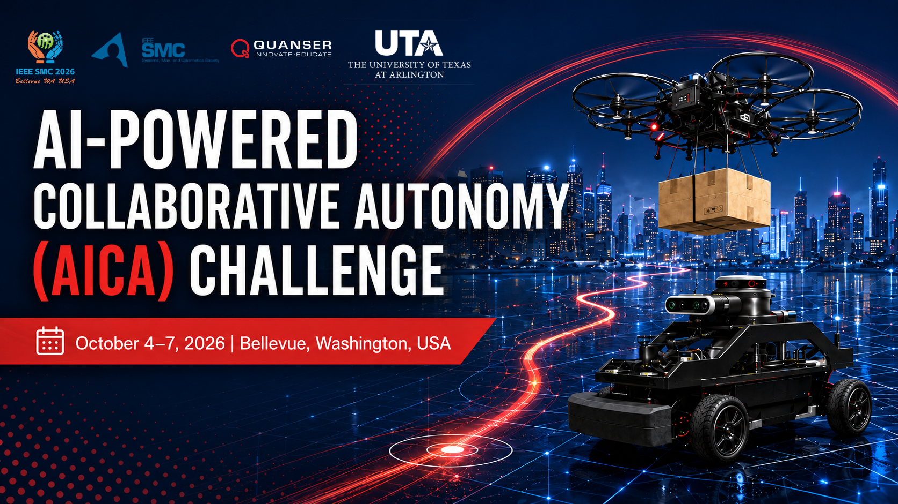

IEEE SMC 2026, in partnership with Quanser and The University of Texas at Arlington, is proud to launch the AI-Powered Collaborative Autonomy (AICA) Challenge 2026, a new student competition focused on AI-driven collaborative autonomy for future smart cities.
As part of IEEE SMC 2026, held October 4–7, 2026, in Bellevue, WA, USA, the AICA Challenge will provide students with a hands-on opportunity to develop innovative AI solutions for unmanned aerial vehicles, ground vehicles, and human-centered smart-city applications.
The challenge focuses on a realistic urban logistics scenario in which a Quanser QCar2 ground vehicle and a QDrone2 aerial vehicle collaborate to deliver packages from a central pickup location to customers. The window-delivery task further highlights the potential of collaborative autonomy to improve accessibility for residents in higher-floor apartments, particularly elderly individuals and those with limited mobility.
Participants will design strategies that use the complementary strengths of aerial and ground vehicles, requiring effective coordination, path planning, and control algorithms.
Through this competition, IEEE SMC 2026 aims to engage students in next-generation autonomous systems, real-world problem solving, and AI-driven innovation. Participants will gain hands-on experience, visibility within the IEEE SMC community, and the opportunity to compete for a $2,000 first-place prize.
Join us at IEEE SMC 2026 to compete, learn, and showcase your ideas at the forefront of collaborative autonomy.